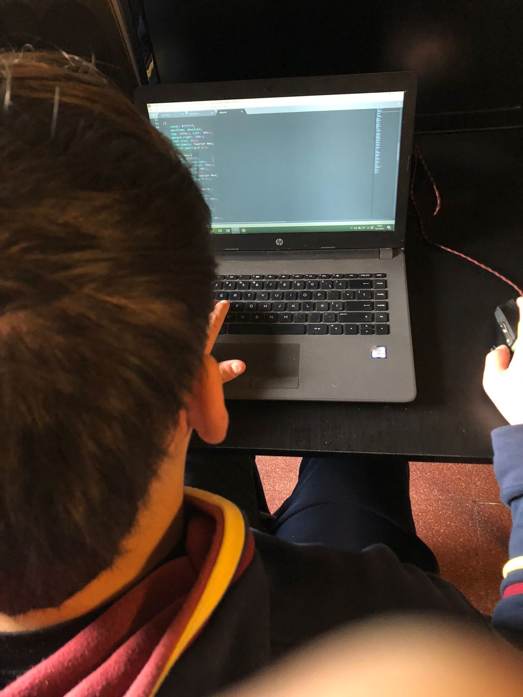
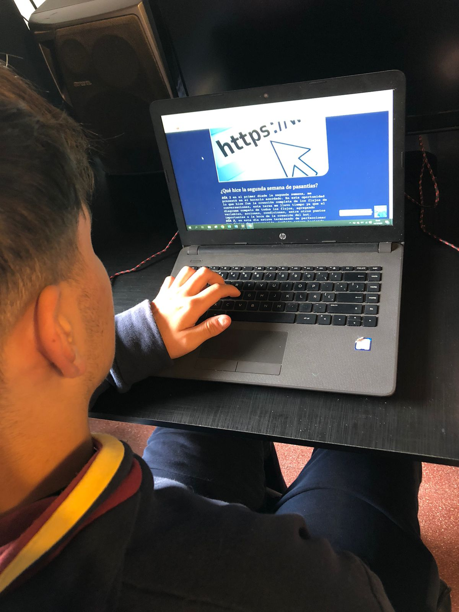
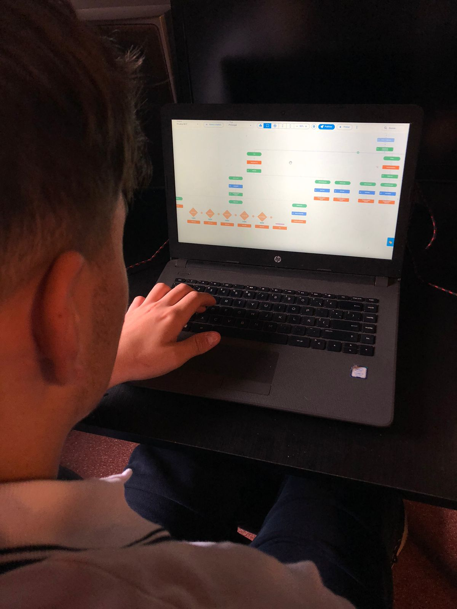
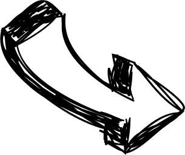
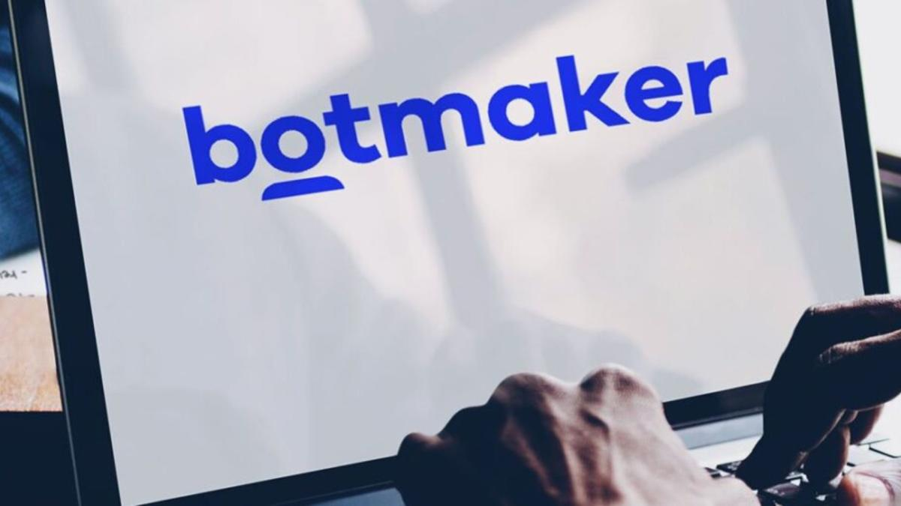

Primera semana de pasantías
Fotos
Pasantías
Fotos
Pasantías
Fotos
Pasantías
Fotos
Pasantías
Fotos
Pasantías




Html y css

Página web

Botmaker

¿Qué hice la primera semana de pasantías?
DÍA 1 en el primer díade la segunda semana, me presenté en el horario acordado. En esta oportunidad lo que hice fue la creación completa de los flujos de conversaciones, esta terea me llevo tiempo ya que el diagrama competo de todos los flujos, agregando variables, acciones, condiciones, entre otros puntos importantes a la hora de la creación del bot.
DÍA 2, en este día estuve terminando de perfeccionar los flujos de conversación, también estuve haciendo pruebas de circuitos y diferentes interacciones con el bot, para poder corregir diferentes problemas en la funcionalidad de este.
DÍA 3 , hasta la fecha el bot funcionaba bajo condiciones, estas eran dos números de teléfono para poder testear el bot, entonces este día diseñe y personalice el WebChat para poder anidarlo a una página web. Luego de esto, pensé en la idea para poder desarrollar una página web para poder utilizar también el bot.
DÍA 4 , en dicho día, utilizando Sublime Text 3, este es un editor de código, que utilizo habitualmente para programar, empecé a desarrollar la estructura de la página mediante HTML, Lenguaje de Marcado de Hipertexto (HTML) que es el código que se utiliza para estructurar y desplegar una página web y sus contenidos.
DÍA 5 con la estructura de la página ya desarrollada, le empecé a dar diseño y personalización a la estructura con CSS, este es uno de los lenguajes más importantes que se utilizan para ordenar las instrucciones referentes a la apariencia de un sitio y presentar los contenidos de una página de forma atractiva. De este modo, HTML se emplea para estructurar el contenido de un sitio, mientras que CSS se usa para estructurar su presentación.
Segunda semana de Pasantías
¿Qué hice la segunda semana de pasantías?
DÍA 1, me presente en la casa de mi empleador a las 6:50hs, me introdujo acerca de la organización donde él trabaja, también sobre los objetivos que íbamos a llevar a cabo lo largo de las dos semanas .Por un lado el objetivo de la primer semana fue la creación de un bot a través del software BotMaker, este es una plataforma de inteligencia artificial para crear y administrar bots habilitados por voz y texto. Luego conecte mi equipo para empezar a investigar acerca del programa y sus funcionalidades, hasta las 11:00hs cuando finalizo mi día.
DÍA 2, llegue en el horario habitual, luego mi empleador me mostro el bot de la Fundation Forge, que es donde él trabaja, donde me explico la utilización de los flujos de conversación y lo básico para idea mi propio bot. Con todos estos conocimientos me dio la tarea de pensar la idea para elaborar el diagrama y los flujos de conversación que iba a tener mi bot en formato papel, para posteriormente programarlo en formato digital. Elegi elabrorar el bot acerca de los lenguajes de programación.
DÍA 3, con todo lo elaborado el día martes, mi empleador se conectó desde mi computadora con su cuenta de BotMaker, para que yo pueda empezar a crear los flujos de conversación. Luego empecé a pasar la idea en formato papel a la computadora. Finalice el día con un bot simple, con funcionalidad limitada.
DÍA 4, con ayuda de Adolfo y mi propia investigación pude empezar a usar las variables dentro de BotMaker, esto me llevo más tiempo ya que era más complejo, pero a prueba y error quedo el chatbot con diferentes usos más avanzados que al principio.
DÍA 5, en el último día de la primer semana, con ayuda de Adolfo y mi propia investigación pude empezar a usar las variables, acciones y decisiones dentro de BotMaker, esto me llevo más tiempo ya que era más complejo, pero luego de teastear, el chatbot quedo funcionando con diferentes usos más avanzados que al principio.

Lugar donde realice mis pasantías: